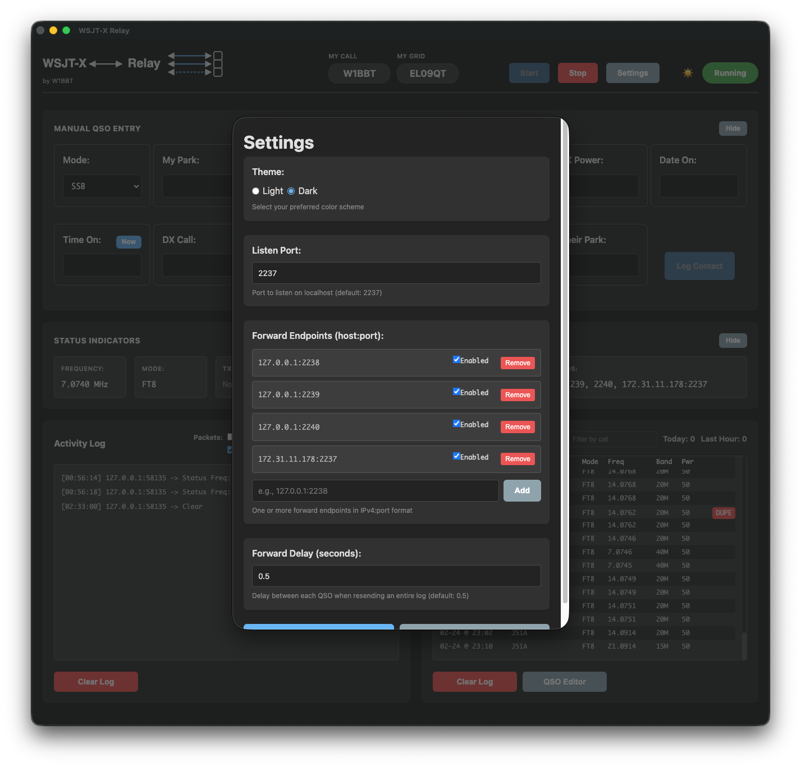
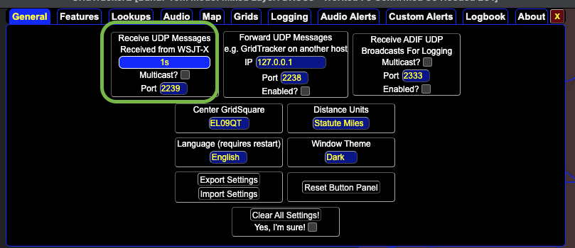

Click any screenshot to open a larger view with its setup instructions.
1) WSJT-X settings (port 2237)
Set WSJT-X to send on UDP port 2237.

Notes:
Callsign and Gridsquare come from WSJT-X General Settings tab.
If the WSJT-X configration name is in [callsign]@[park id] format, WSJT-X Relay will populate My Park as well.
2) WSJT-X Relay settings
WSJT-X Relay listens on 2237 and relays to:
2238 (WRL CAT Control), 2239 (GridTracker), and
2240 (openHamclock).

3) WRL CAT Control
Configure WRL CAT Control to listen for WSJT-X packets on 2238.

4) GridTracker
Configure GridTracker to listen on 2239. Reply packets from GridTracker are sent
back through Relay to WSJT-X.

5) openHamclock
Configure openHamclock to listen on 2240 by updating the following settings in the .env file.